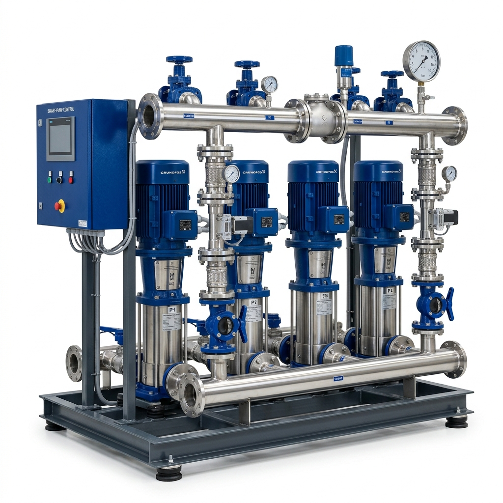
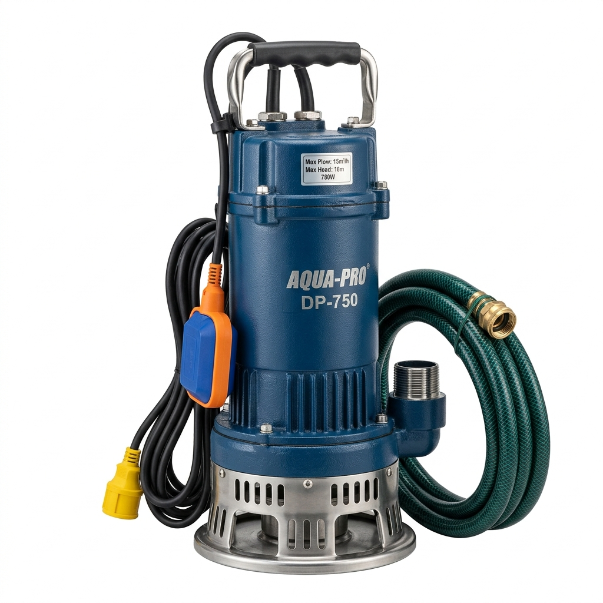
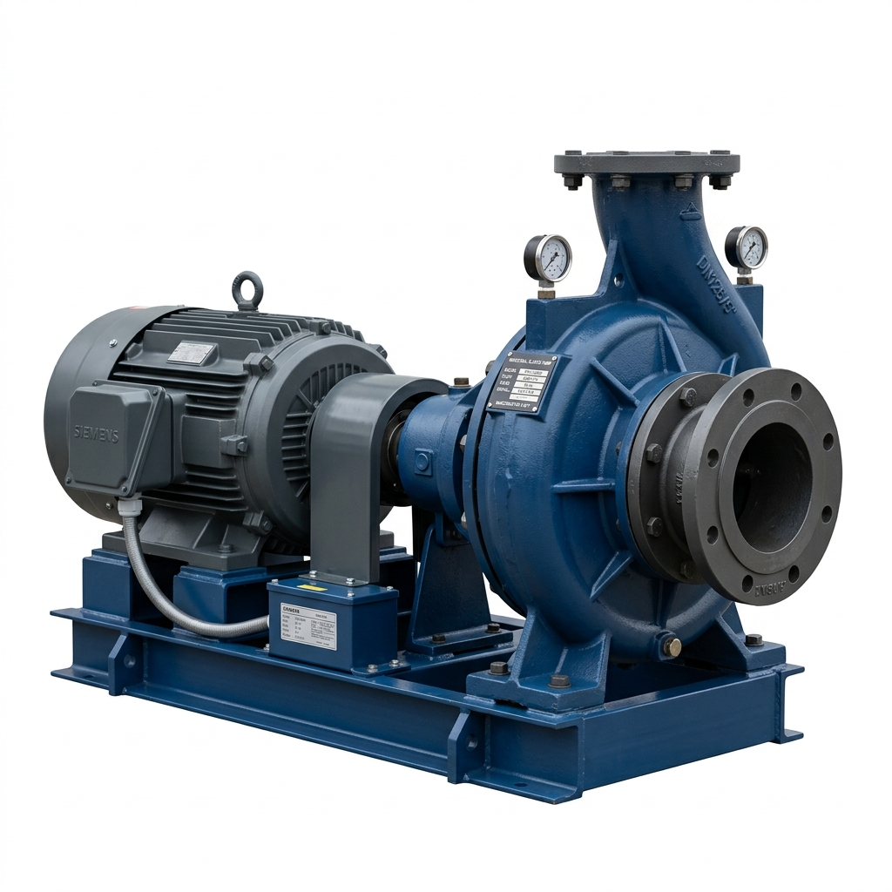

비에이텍의 뛰어난 기술력으로 제작된 고효율 펌프 제품군입니다.
각 제품의 상세 보기 버튼을 클릭하여 유지관리 지침서를 확인하세요.

부스터펌프
수압을 일정하게 유지시켜주는 고효율 급수 시스템

수중펌프
물 속에 잠긴 상태로 작동하며 배수 및 양수에 탁월

슬러지펌프
고농도 찌꺼기가 포함된 오폐수 처리에 최적화된 설계

정량펌프
약품 투입 등 정밀한 유량 제어가 필요한 공정에 사용

편흡입볼류트펌프
일반 산업용 및 농수용으로 널리 쓰이는 표준형 펌프

모노펌프
고점도 액체 및 고형물 이송에 적합한 일축나사식 펌프